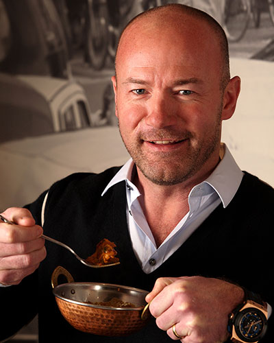

Michael Owen has opened up to talkSPORT about his relationship with Alan Shearer a week on from their widely publicised social media spat.
The former England internationals got into it on Twitter last week following revelations in Owen’s new book, Reboot – My Life, My Time, about Shearer’s time in charge of Newcastle, which ended with the Magpies being relegated to the Championship.
After Owen spoke of his regret at joining Newcastle, he was called out on Twitter by the former Toon captain, though he was then accused by Owen of trying to force a move away from St James’ Park to join Liverpool after being benched by Sir Bobby Robson.
And it appears this spat is not a one-time thing, with Owen confirming the pair have endured a serious breakdown in their relationship.
“It’s not paper talk unfortunately,” Owen told the Alan Brazil Sports Breakfast. “I haven’t spoken to him for a long time sadly.
“I had the same agent as Alan, the same boot sponsor – we were always together on the circuit.
“One of the reasons for going to Newcastle was thinking, ‘how great will this be, playing for a season or two with Alan Shearer’. That’s one of the reasons I thought about going to Newcastle.
“I stayed at his house while I was house hunting; me and my family were big mates – and we remained that.
“But sadly, as soon as he took over as manager, it took a twist – and it took a twist in the final game.”
The claims in Owen’s book relate to Newcastle’s final match of the 2008/09 season, when they had to get a result away at Aston Villa to stay up – though they ended up losing 1-0 to suffer relegation.
Owen did not believe he was fit enough to start the final day encounter, though he was among the substitutes and was brought on with 24 minutes to play.
There have long been accusations Owen was happy to sit out the match as he was out of contract that summer and didn’t want to scupper his prospects of a deal elsewhere, and the former Liverpool star claims in his book that Shearer shared these views.
When asked about this on talkSPORT, the ex-striker replied: “That’s basically the crux of the matter.
“I had a groin injury for a period of time so I didn’t even play many games under Alan, but then the last game was looming and, in my eyes, I knew my body better than anybody; I don’t care if you’re the best doctor of physio in the world, I knew my body.